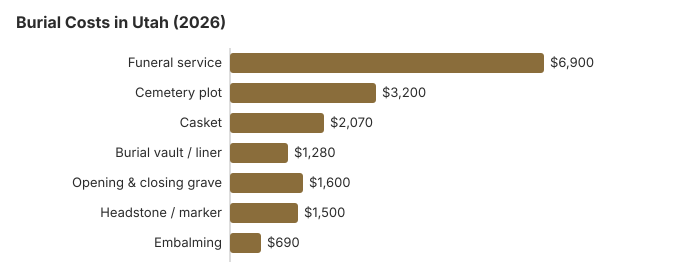

Burial Costs in Utah (2026)
A Utah burial costs $15,550 to $20,050 in our estimates, with about $6,900 going to the funeral home and $3,200 to a plot. Two Utah details can change the plan: cemeteries at higher elevations may not open graves in winter, and rural cemetery prices are often held by the county clerk rather than posted anywhere. This page prices each item and explains both.
Utah Burial Costs, Item by Item
| Item | Utah estimate | Low to high |
|---|---|---|
| Funeral service | $6,900 | $5,175 – $8,970 |
| Cemetery plot | $3,200 | $1,600 – $6,400 |
| Casket | $2,070 | $690 – $5,520 |
| Burial vault / liner | $1,280 | $800 – $10,000 |
| Opening & closing grave | $1,600 | $500 – $3,000 |
| Headstone / marker | $1,500 | $500 – $5,000+ |
| Embalming | $690 | $500 – $1,500 |
How to read these figures: Utah prices here are estimated, not gathered from Utah funeral homes, and no provider is bound by them. They are a yardstick for the quotes you get. We describe our method in detail, along with a disclaimer.
State sources: Utah Department of Veterans and Military Affairs.

Count the cemetery's fees together with the funeral home's and a Utah burial comes to $15,550 to $20,050 in our model; the casket and the cemetery make most of the difference.
Winter Burials at Utah Elevations
When a winter death means a spring burial in Utah, ask two things: whether the cemetery charges to keep the casket in its receiving vault, and whether the funeral home's price includes a second trip in spring. Interment seasons differ widely across the state, so ask each cemetery about its own. A family that can wait until spring may also have more time to compare monument quotes before the headstone is ordered.
Burial Resources
- Funeral Consumers AllianceNonprofit consumer advocacy for funeral pricing
- Headstone & Monument GuideCosts, types, and buying tips
- Green Burial OptionsEco-friendly and natural alternatives
- Best Online Casket RetailersCaskets bought online often cost less
- Best Burial InsuranceCompare plans to cover burial expenses
Compare Funeral Costs
- Average Funeral Cost in 2026National cost breakdown with real prices
- Cremation vs. Burial Cost ComparisonSide-by-side price comparison to help you decide
- Funeral Cost BreakdownEvery line item explained: know what you're paying for
- Cheapest Funeral OptionsLower-cost alternatives, with typical price ranges
- Direct Cremation: Most Affordable OptionNFDA 2023 median $2,645 with a family-supplied container (latest available)
- How to Compare Funeral PricesStep-by-step guide to getting the best price
Burial Options in Utah
- Traditional burial: Full funeral service with viewing, casket, and cemetery burial, from about $6,900 for the Utah funeral service alone.
- Learn about green burial
- Mausoleum entombment: Above-ground placement in a mausoleum; Utah crypt prices are not in the table, so ask each cemetery.
Ways to Lower a Burial Bill in Utah
Some Utah-specific ways to spend less:
- Ask about the winter season. In the mountains, some Utah cemeteries close for burials over the winter months and hold the casket until the ground thaws. Storage fees vary a lot, so ask for them in writing.
- Call the county clerk. In rural Utah the cemetery fee schedule is often kept only by the county clerk. Those county rates can run 40 to 60% under what private Salt Lake City cemeteries charge.
- Consider family burial where it is allowed. Utah law gives families real room here, as the interment rule below shows. Where it works, a family plot can remove cemetery fees entirely while staying within the law; our home funeral guide covers the paperwork.
- Compare the $2,070 Utah casket estimate with the casket buying guide and the list of online casket retailers.
- Price the headstone yourself. Utah funeral homes and cemeteries mark up headstones, so get a quote from a monument dealer too.
For ways to bring a Utah burial bill down, see our affordable funeral options guide or payment assistance programs.
Frequently Asked Questions
How much is a full burial in Utah?
In our Utah figures the funeral home's service is about $6,900, a plot $3,200, a casket $2,070, a vault $1,280 and opening and closing $1,600, with a headstone at $500 to $5,000. That adds up to $15,550 to $20,050.
Do Utah cemeteries require a burial vault?
Most Utah cemeteries require one by their own rules, not because of state law; the vault or liner keeps the ground from sinking. Prices range widely, $800 to $10,000; a simple concrete liner is often allowed.
What is the least expensive burial in Utah?
Direct burial skips embalming, the viewing and the service, and is the cheapest burial on a Utah price list. Natural burial without embalming, in a biodegradable container, usually costs only a little more, if your cemetery permits it.
How should a Utah family compare cemeteries?
Compare a rural cemetery with a city one. Cemeteries run through Utah county clerks often charge far less than private cemeteries around Salt Lake City, but at higher elevations winter closures can delay the burial.
What else is added to a Utah burial estimate?
Plan for pass-through charges. Copies of the death certificate, a printed obituary and flowers come on top of the $15,550 to $20,050 Utah estimate, since the funeral home buys them from others.
Can a Utah family choose a green burial?
Sometimes. Utah's dedicated green cemeteries are few, so ask local cemeteries whether they permit burial without embalming or a vault; our green burial guide lists what to ask.
More for Utah
Utah's interment rule and the cemetery's monthly report
A Utah sexton or cemetery manager may not let a burial take place unless it is handled by a funeral service director or by someone holding a burial-transit permit, which is how a family burying its own dead stays within the law. Who decides on the disposition follows the order set in Utah Code §§ 58-9-601 to 58-9-604 (Utah Code § 26B-8-122; checked October 29, 2026).
- Public burial record: every cemetery keeps a record of each burial, with the name, place of death, date and who made the interment, and that record is open to the public; a city or county clerk may keep it instead.
- Monthly list: by the 10th of each month, the cemetery or clerk sends the local registrar and the state a list of the previous month's burials.
Who regulates Utah burials, and where to find help
The Utah Board of Funeral Service licenses funeral homes and takes license questions and complaints at 801-530-6621. Cemeteries may answer to a different office, so ask who oversees the one you are considering.
The Funeral Consumers Alliance does not count Utah among the nine states that require a funeral director, so a Utah family can arrange a burial itself. Utah requires a disposition permit for every burial, and cemeteries add their own conditions. Cremation has no fixed waiting period but also needs a permit (Utah Code 58-9-610, 26B-8-230).
Public help with the cost
When a body is unclaimed, Utah law has the county where it was found pay for a decent burial (Utah Code § 26B-8-225). (Source: Utah Code §§ 26B-8-225, 17-53-221.) Social Security's one-time $255 death payment can be claimed within two years by a surviving spouse or child; it is paid to them, not to the cemetery.
For Utah veterans, the plot and marker in a national cemetery are free, which can remove thousands from a burial bill. In Utah, VA national cemeteries accepting burials: Southern Utah National Cemetery (435-267-2710); state veterans cemetery: Utah Veterans Cemetery and Memorial Park (801-254-9036) (source: VA National Cemetery Administration). Southern Utah National Cemetery is in Cedar City, and the state-run Utah Veterans Cemetery and Memorial Park, in Bluffdale, is the closer option for families around Salt Lake City. The Utah Department of Veterans and Military Affairs reports VA grants of more than $16.5 million to add 1,400 columbarium niches at Bluffdale and to establish a new state veterans cemetery in Washington Terrace.
Next steps in Utah
- In a rural county, start with the clerk's fee schedule.
- In winter, get the storage charge and the spring date in writing.
- When nobody can cover the cost, call the county where the death occurred before signing anything with a funeral home.
- Veterans: Bluffdale or Southern Utah National Cemetery will ask for discharge papers.
- Complaints about a Utah funeral home's prices go to 801-530-6621.